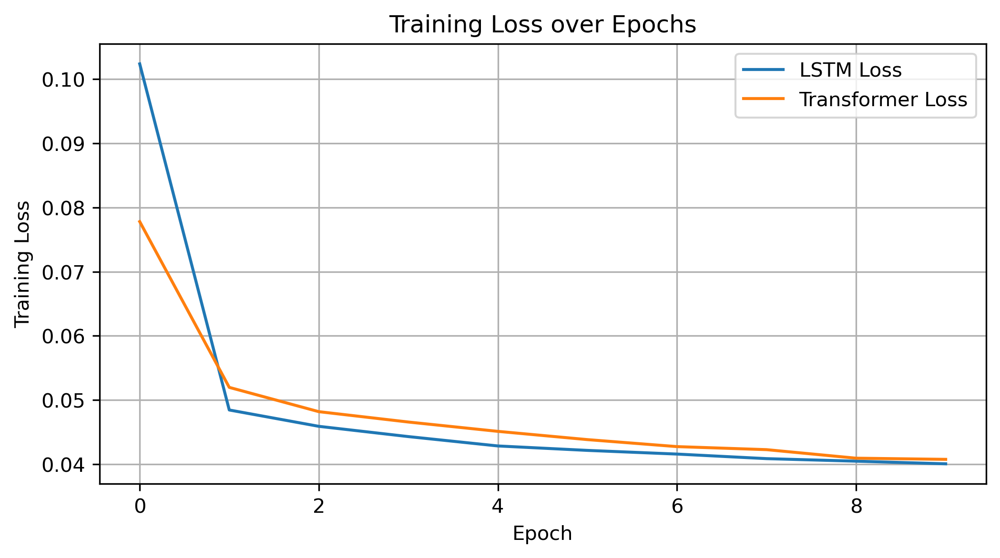
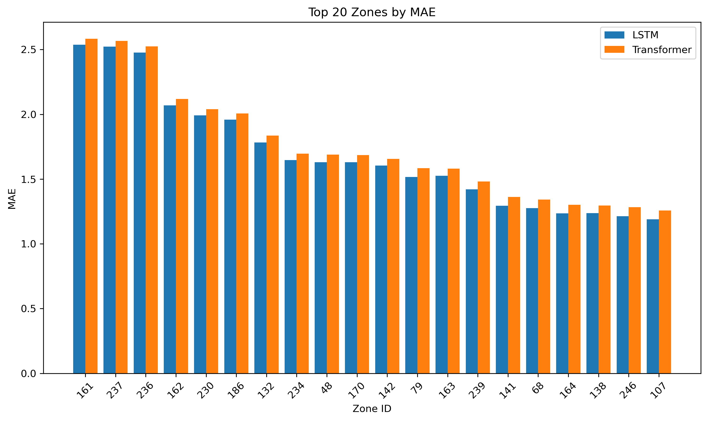

Project information
- Category: Graduate Coursework, University of Michigan (STATS 507)
- Data: NYC Yellow Taxi Trip Data, Jan 2019 – Feb 2020
- Tools: PyTorch, LSTM, Transformer (self-attention)
The Problem
Short-term taxi demand forecasting helps cities and fleet operators position vehicles before demand spikes rather than reacting after the fact. Deep sequential models are a natural fit for this since demand has strong temporal patterns, but the two dominant architectures—LSTMs and Transformers—come with a real tradeoff. Transformers can capture longer-range patterns through self-attention, but at meaningfully higher computational cost. I wanted to quantify that tradeoff directly rather than assume it.
Approach
Using a year-plus of NYC Yellow Taxi trip data aggregated to the zone-hour level, I trained a univariate LSTM and a Transformer encoder side by side on identical inputs—lagged demand (1, 2, 3, and 24 hours back) plus hour-of-day and day-of-week—to predict the next hour's pickups in each zone. Same data splits, same preprocessing, same loss function, so any difference in outcome came from the architecture itself, not the setup.

Both models converge within 10 epochs — the Transformer starts faster, but the LSTM catches up by the end.
Key Results
- Overall, the Transformer edged out the LSTM on accuracy — RMSE 0.2450 vs. 0.2502, MAE 0.1034 vs. 0.1061 — but took over 4× longer to train (157s vs. 39s) and nearly 2× longer to evaluate
- That overall edge didn't hold up where it mattered most: across the 20 highest-error zones, the LSTM had lower error than the Transformer in every single one — the Transformer's aggregate advantage came entirely from the easier, more typical zones
- Both models produced residuals tightly centered at zero, indicating neither was systematically biased
- Net read: the Transformer's marginal accuracy gain doesn't clearly justify its cost, and it's specifically weaker exactly where robustness matters most—volatile, high-demand zones

In the hardest-to-predict zones, the LSTM was consistently more accurate than the Transformer — the opposite of the overall trend.
Why It Matters
The headline number here (Transformer wins on RMSE) is true but incomplete, and a model choice made on that number alone would pick the architecture that's actually less reliable in the highest-stakes zones. That's the same judgment call that matters anywhere a model gets deployed under real constraints—an aggregate metric can hide exactly where a model breaks down, and catching that requires looking past the summary statistic to where the errors actually live.